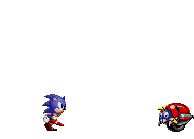
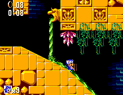
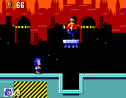

Sonic the Hedgehog (videojuego de 1991)
 De: La Frikipedia, la enciclopedia extremadamente seria.
De: La Frikipedia, la enciclopedia extremadamente seria.
De la serie Videojuegos:
Sonic The Hedgehog

Carátula original del Sonic The Hedgehog, nunca antes vista por los gaijins occidentales.
| Desarrollado por:
|
SEGA
|
| Distribuido por:
|
El mismo que el desarrollador
|
| Diseñado por:
|
LLujinaca (Yuji Naka)
|
| Motor
|
Sus zapatos
|
| Género(s)
|
Macho, aunque no se le vea (y no me refiero al pelo del pecho).
|
| Fecha de lanzamiento:
|
Piedras (se las tira a Eggman)
|
| Modos de juego:
|
¿?
|
| Requisitos:
|
Acabar con Eggman
|
| Disponible en:
|
Sega Genesis, Game Gear y Emuladores para PC.
|
| Formatos:
|
8, 16, 32 y 128 bits (los 64 se los pasó de largo)
|
| Edades:
|
siempre tiene la misma edad
|
| Puntuaciones:
|
A,B,C,D,E. Sonic tambien es conocido como el vitamínico.
|
Este artículo trata sobre el videojuego. Para el artículo del prota del mismo, véase Sonic The Hedgehog.
Sonic The Hedgehog es un erizo azul llamado Sonic The Hedgehog (increíble la creatividad de los nombres). Fue lanzado en 1991 por la empresa japonesa SEGA, en su afán de desbancar a Nintendo del podio de los videojuegos, algo que Sega pudo lograr gracias a éste juego de Sonic y sus posteriores secuelas, pero que después la cagaron por arruinar su propia franquicia y por eso Nintendo volvió a tener protagonismo y Sega mas bien se fue por el caño (aunque ahora a los dos los cagaron Sony y Microsoft), pero en aquella época clásica de los años 90 Sonic era el Dios de los Videojuegos y por eso su primer título marcó un hito en toda la Historia de los videojuegos.
Historia
Concepto, Creación y Desarrollo
En aquellos años dorados de la década del Hang-On, Master Blaster, y otros menos afortunados, pero en las consolas domésticas Sega estaba perdiendo porque a su Master System de SEGA y lo cambiaban por el NES de Nientiendo para jugarle al Mario Bros.
Para ganarle a Nientiendo en su propio juego, los de Sega se pusieron a jugar al Mario Bros, y así les ganaron a los de Nintendo "en su propio juego" decidieron ir un paso adelante en la evolución de los videojuegos y dieron un salto de lefa hacia la siguiente generación de consolas, creando por primera vez la hasta entonces única consola de 16 Bits, que dieron de llamar Sega Mega Drive (y que los gringos le cambiaron el nombre a Sega Genesis, porque son fanáticos religiosos que se coparon con la Biblia y le pusieron el nombre del primer libro a ésta consola).
Como el Mega Drive tenía el doble de Bits que el NES de Nintendo, SEGA aprovechó su superioridad técnica y decidió hacer un juego de plataformas que fuera altamente superior al Mario Bros, y con el doble de Bits del Mega Drive se podían hacer fases mucho mejores y mas variadas y coloridas que las fases monótonas y todas iguales del Super Mario, y la música también podía mejorarse haciendo melodías mas prendidas y pegajosas en vez de esa musiquita de mierda que el Mario tenía en todas las fases por igual, y ahora con fases de diversa escenografía y músicas distintas para cada una SEGA prometía superar en todos los aspectos al obsoleto Super Mario Bros de Atari (es que Atari fue la consola original de Mario; Nintendo nomás se lo robó.)
Seguro mientras ves esto estas pensando ♪ "
Tan-tan, tan-tan,-tan; tan-tan-tan-ta-ta,-tan; ta-ta-ra-ra, ta-rá, Tön!" ♪
El detalle mas importante era que la nueva consola de Sega era obviamente mas rápida que la de Nintendo, y por eso decidieron hacer hincapié en la velocidad y aprovechar al máximo ésto, haciendo que el nuevo personaje de Sega corriera a altas velocidades por las fases coloridas y bien musicalizadas, en contraste con el monótono y tan trillado Mario que era un lenteja que caminaba lento por esas fases repetitivas y todas iguales con la misma música de mierda. Para crear el nuevo personaje los de Sega llamaron a Hayao Miyazaki... pero como cobraba muy caro contrataron a Naoto Ohshima. Ohshima diseñó primero a un personaje que era un viejito gordito y petizo con grandes bigotes, obviamente plagiando a Mario, pero el entonces Presidente de SEGA Hayao Nakayama no quería problemas legales (porque ya bastante tenía con los problemas financieros por la baja de las ventas de Animal Planet esbozó unos personajes basados en el Gato Felix: uno de ellos era un perro, pa' que no digan ahora que había plagiado al Gato Felix, pero a Hayao Nakayama no le pareció muy original lo de que el prota sea un perro así que lo descartaron. Otro era un armadillo, y a Nakayama le gustó la idea de que el prota sea un animal mas exótico (porque a él le gustaban las bailarinas exóticas) y quedó fascinado con la idea de que el personaje se enrrolle en bola para defenderse de los malos así que el salto del prota sería un salto acrobático enrrollandose en bola para contrastar con el saltito pedorro y lineal que hacía Mario, pero Hayao Nakayama quería acentuar el hecho de que el personaje tenía como característica la gran velocidad, así que Naoto Ohshima borró las líneas que dibujaban la coraza del armadillo y en su lugar dibujó unas lineas hacia atrás como pinchos que hacían parecer que el personaje corría rápido, y así fue que quedó siendo un erizo; y lo pintaron de azul por los colores del logo de SEGA, y con zapatos rojos que dan la impresión de que los pies están que arden de lo rápido que corre; y con guantes en las manos pa' que no digan que le copiaron al Gato Felix; y como el animalejo corría a la velocidad del sonido entonces de nombre le pusieron Sonic, y como es un erizo por eso en inglés se llama Sonic The Hedgehog (porque en japonés se llama Sonikku Za Hejjihoggu y cuesta un carajo pronunciarlo correctamente).
Ahora ya tenían el protagonista, el erizo azul; al antagonista, el gordo bigotudo, y las fases super lisérgicas con músicas bien prendidas, así que nomás les faltaba ensamblar todas las piezas y para eso llamaron a Yuji Naka.
Argumento del juego
Con su salto acrobático Sonic puede saltar muchas plataformas juntas, pero es muy peligroso, así que ¡NO INTENTEN HACER ESTO EN CASA!.

...¡TE DIJE QUE NO LO INTENTES!
Yuji Naka le robó el crédito a Naoto Ohshima, porque aunque Ohshima diseñó los personajes igual fue Naka el que diseñó todo el entramado del juego así que por eso a Ohshima lo cagaron y se fue con Bill Gates, y Mr. Naka fue el que apareció en los posteriores juegos de la franquicia como el autor del juego y "creador de Sonic", aunque en realidad él no lo creó y solo lo programó.
Para el argumento del juego situaron a Sonic en una isla conocida como South Island, que está obviamente en los mares del sur de un planeta llamado Roosevelt, pero como los gringos no querían que se burlen de sus presidentes super fachas entonces en occidente le cambiaron el nombre a Eggman y le pusieron Ivo Robotnik, que como vemos es ruso porque los enemigos de los gringos eran los bolcheviques de la ahora extinta CCCP. Aún así, el Dr. Robotnik éste parece que de comunista no tiene ni las bolas, porque mas que liberar al proletariado lo que hace es justamente lo contrario, esclavizar al proletariado y encerrar hasta a los animalillos en maquinas de producción fabril para que sean sus esclavos, a costa de saquear los recursos naturales de la isla de Sonic y destruir la naturaleza para dominar el mundo; en otras palabras; el Dr. Eggman es capitalista y sueña con convertirse en el único burgués que domine al mundo con su régimen dictatorial de economía de mercado y explotación de recursos naturales. Así las cosas Sonic emprende una cruzada contra el Dr. Eggman y debe corretear por las seis zonas coloridas y lisérgicas de la Isla del Sur para liberar a los animalejos que Eggman atrapó y encerró dentro de los Badniks y otras vainas, y obviamente en cada fase debe enfrentarse al mismísimo Eggman para derrotar su creciente imperio de producción capitalista que está destruyendo el equilibro ecológico natural de su querido y acrático Planeta Möbius.
Personajes
- Mobius. Nació en Xmas Island pero vive en South Island, y es en esa isla donde transcurre todo el juego. Tiene como 15 años pero es un enano que mide poco mas de un metro y pesa unos 35 o 40 Kg, y por eso puede correr tan rápido porque dada su baja estatura y su delgadez, resulta mas liviano que una mosca. Este erizo flacucho vive tranquilamente fumando hierba en South Island y disfruta de la anarquía de su planeta donde al no haber ni Estado, ni propiedad privada, ni religión, nadie lo obliga a trabajar y nadie es su patrón, ni jefe, ni amo y señor, ni nada. Por eso se cabrea tanto cuando aparece el Dr. Eggman ya que éste se convierte en el jefe que en cada zona debe derrotar, y para colmo el muy bastardo de Eggman gusta de destruir los ecosistemas naturales para esclavizar a los animalillos, lo que va contra los ideales ecologistas de Sonic, y por eso el erizo anarquista adopta una postura 50% Punk y 50% Hippie para luchar contra la opresión burguesa de Eggman y sus crímenes contra el medio ambiente que contaminan el cielo y la tierra.

- Dr. Ivo "Eggman" Robotnik: Es el humano malvado que destruye el medio ambiente y atenta contra la vida silvestre llevando a la biodiversidad al borde de la extinción. Eggman es un neonazi partidario de los Skinheads que quiere dominar el mundo y para ello se apodera de los recursos naturales destruyendo todas las zonas a su paso. Cuando lleva a las especies en peligro de extinción a su fábrica automatizada, los mete dentro de unos robots llamados BADNIKs que le sirven tanto de trabajadores esclavos para fabricar armas de destrucción masiva y búnkeres y fortalezas blindadas, como también para emplearlos como soldados y tropas de asalto contra Sonic. Los intereses imperialistas y codiciosos del Dr. Eggman lo convierten en el científico loco mas aburguesado de todos, y por lo tanto el mas malvado, tanto así que Eggman no tendría problemas en secuestrar a Sonic y meterlo dentro de un Badnik para que le sirva de esclavo, pero como Sonic es muy rápido siempre se le escapa, así que Eggman trata de matar a Sonic para que el erizo no estropee sus planes de dominación mundial, y en última instancia para obtener badniks mas poderosos Eggman quizá atrape a Bowser, Doraemon, y Bugs Bunny y los meta dentro de sus robots badniks.
Desarrollo y Sistema de juego
El juego es en 2D, como todos los de aquella épica época; y Sonic puede correr a toda velocidad desde el inicio y saltar enrrollandose en bola para destruir a los robots Badniks y liberar al animalejo que se encuentra en el interior de la máquina. Al principio se había pensado en aprovechar los tres botones A, B, C del Joystick para que con uno de los botones Sonic saltara, con otro atacara, y con otro lanzara objetos; pero eso ya era trollear demasiado y para no joderla tanto nomás hicieron que con los tres botones saltara igual para que el juego sea mas facil y se enfocara mas en la velocidad.
Estructura del juego
Sonic debe atravezar seis fases, que en estos juegos se nombran como Zonas, y cada zona se divide en tres actos cada una, como para que sea mas largo y te compliques más. Los dos primeros actos de cada fase los acabas cuando llegas a un poste al final del recorrido, que es un cartel con el rostro de Eggman y Sonic debe golpearlo para que el poste de vueltas hasta que el cartel queda del reverso y muestra la cara de Sonic, lo que indica que Sonic es "invertido". El tercer acto de cada fase no tiene cartel al final porque aquí debes enfrentarte a Eggman que viene montando a tu hermana en su Eggmobile, un vehículo volador con forma de huevo que usa un arma diferente en cada fase para intentar matar a Sonic. Solo al vencer a Eggman se puede pasar a la siguiente fase, que comenzará en un Acto 1, y seguirá luego en el 2 y el 3 para volver a enfrentar a Eggman, y así sustantivamente...
Enemigos
 Sonic matando bichos (podría trabajar en una empresa de desinfecciones y control de plagas).
Durante el transcurso de las fases Sonic será atacado por los robots Badniks, que Sonic debe golpear una vez para romperlos y liberar al animalillo que está atrapado adentro, ya que los Badniks son robots que funcionan gracias al movimiento de un animal atrapado en su interior, y uno se pregunta por qué carajo esos animales de mierda atacan a Sonic cuando él viene a ayudarlos, pero bueno... serán unos ingratos... Para ayudarse a pasar las fases infestadas de badniks Sonic cuenta con una serie de objetos y porquerías que lo ayudan en su progreso en el juego, pero en el Acto 3 el erizo se enfrenta al Dr. Robotnik y ahí ya no lo vences golpeandolo una sola vez como al baboso de Bowser del Mario Bros: ¡¡Al Dr. Eggman hay que golpearlo 8 veces para poder derrotarlo!!.
Al derrotar a Eggman Sonic siempre se topa con una cápsula contenedora que debe abrir al golpear el botón que tiene en la parte de arriba, y así libera a todos los animalejos que están atrapados dentro y que fueron encerrados allí por el hijo de puta de Eggman. El juego sigue así en todas las fases, hasta que al final del tercer acto de la sexta fase descubres que no hay ningún enemigo, sino que pasas directo a una séptima fase de acto único donde instantáneamente debes enfrentarte al Dr. Eggman en la batalla final del juego, como para darle un poco de suspenso y mas emoción a la trama tan simple de este juego.
Objetos
Como se dijo antes, Sonic dispone de una serie de objetos que lo ayudan en su transcurso por el juego, porque convengamos que las fases de éste game no son esa bazofia lineal como las fases de Mario, aquí las Zonas son bien intrincadas llenas de vaivenes, caminos aleatorios, pasadizos secretos, vueltas o Loopings que dan giros impresionantes, y caminos sinuosos donde vas a toda velocidad y hay resortes que te catapultan hasta las nubes y puentes que se derrumban, en fin... toda clase de obstáculos y porquerías que te hacen la vida mas difícil y para colmo se te complica con los badniks esos que te joden las pelotas, así que enhorabuena que para pasar el juego haya alguna que otra porquería de objeto y cahivaches que le ayuden a Sonic.

- Anillos: Son unos anillos giratorios de color amarillo brillante que abundan en la mayoría de los actos. Cuando Sonic comienza cada fase está sin anillos, lo que puede verse en un contador en la parte superior izquierda de la pantalla donde la palabra "RINGS" titila en rojo y el contador muestra 0. Si estás sin rings nomás basta que un badnik te toque y te manda al "otro lado", ¡si hijo, no estoy bromeando, si te tocan sin anillos te mueres y Sonic pierde una vida, y si pierde las tres vidas se acaba el juego por Game Over y Sonic se muere definitivamente y se va al infierno porque es anarquista y ateo!, así que para evitar la temprana muerte del erizo lo mejor es juntar cuantos anillos puedas. Lo mejor de este sistema de anillos es que es muy superior al sistema de salud de Mario; en el juego del fontanero Mario empezaba siendo mas enano que de costumbre y si lo tocaban se moría, solo al comerse un hongo crecía dos o tres píxeles y ahora si lo tocaban no moría pero volvía a ser mas enano, y así volvía a quedar vulnerable y si no encontrabas otro hongo te jodías; en cambio el sistema de salud de Sonic basado en anillos es mucho mejor porque si te tocan los badniks y tienes anillos obviamente pierdes los anillos pero no te mueres, pero lo mejor es que los anillos no es que desaparecen y ya, salen botando a tu alrededor así que puedes apresurarte y volver a juntar unos cuantos para no quedar en 0, y así Sonic no queda vulnerable y expuesto a un golpe mortal como si ocurría con Mario. Además los anillos no están escondidos dentro de un cubo ni mucho menos, están sueltos por ahí en grupos y filas de varios anillos, así que no solo esán mas disponibles que los hongos de Mario sino que además aún si los pierdes puedes volver a recoger los que perdiste en vez de tener que buscar otros por ahí, así que eso hace que el sistema de salud de Sonic sea altamente superior al sistema de salud de Mario, lo cual es lógico porque Sonic es anarquista y siempre los rojos y los de izquierda tienen un sistema de salud mucho mejor y mas accesible que el de los fachos de derecha como el fascista de Mario.
- Cama de Púas: Son un conjunto de 3 clavos que están por ahí en todos los niveles. Si Sonic cae sobre los pinchos y no tiene anillos pues pasará aquello que dijimos de que se va "al otro lado" y no precisamente será bien recibido por San Pedro... Para evitar ésto pues lo mismo: Anillos!, nunca olvides recoger anillos y ni se te ocurra hacer como esos pelotudos que se quedan sin anillos y dicen "bah, no importa, total ya llego al final de la fase y me lo paso", y luego cuando menos lo esperas das un salto y caes justo sobre los pinches y tienes que empezar toda la fase desde el principio, así que no jodas con esto y junta anillos, que si te pinchas con la cama de púas es preferible que pierdas los anillos y no tu vida.
- Checkpoint: Es una farola con forma de poste con la cabeza móvil de color azul. Hay varias dispuestas en cada acto. Sonic debe alcanzarlas, y si las toca entonces la cabeza de la farola da una vuelta y se pone color rojo (porque a Sonic le gusta el de cabeza roja). Esto registrará la puntuación y tiempo obtenidos hasta el momento, pero lo mas importante: si Sonic muere al intentar superar el acto, aparecerá en la última farola tocada, con el mismo tiempo y puntuación obtenidos hasta ese momento, y así no tiene que volver a empezar todo el acto desde el principio (pero no tiene los anillos obtenidos, así que empieza con los anillos desde 0 para no dejartelo todo tan fácil :S ).
- Cajas de Ítems: Son unos monitores de video con la imagen de algún objeto. Están presentes en casi todos los actos y los hay de diversos tipos, que se distinguen por la imagen que aparece en la pantalla. Todos los monitores son unas cajetas cuadradas de color gris con la pantalla negra, pero de forma intermitente se puede ver la imagen del objeto que poseen dentro y Sonic debe romperlos saltándoles encima para poder aprovechar las funciones de cada uno. Éstos son:
- 10 Anillos: Tiene la imagen de un anillo. Al destruirlo, obtienes 10 anillos, que suben al marcador, así que no tienes excusa y no puedes perder por falta de anillos porque están por todos lados. Si te quedas sin anillos y pierdes pues serás muy chafa en videojuegos y mejor dedícate a otra cosa.
- Velocidad Sónica: Tiene la imagen de un zapato como el de Sonic. Al destruirlo, Sonic es capaz de correr a una velocidad supersónica durante un breve periodo de tiempo, haciendo más rápido al personaje de lo que ya era por defecto, como para dejar en claro que la potencia extra de los 16 BITs sí es mucho muy superior a los juegos de Nintendo y de su ya gastado Mario Bros, que no le llega ni por asomo a la genialidad de Sonic The Hedgehog.
- Vida extra: Tiene en el monitor la imagen de la cara de Sonic. Al destruir el monitor, el contador de vidas aumenta en 1, algo que con Mario no conseguías ni por puta casualidad.
- Barrera: Tiene una imagen parecida a una esfera azul. Al romperlo, Sonic es recubierto por un campo de fuerza de enegía color azul, y al ser atacado por un enemigo, simplemente pierde esta protección, quedándose con el mismo número de anillos y vidas. Es muy eficaz, pero no protege al erizo de todos los obstáculos. Por ejemplo, si cae al vacío, o es aplastado, perderá una vida aunque tenga el escudo azul, y por eso esta barrera solo sirve para evitar un único golpe de algún badnik o esos pinches de mierda que te clavan hasta el culo, pero no te hace invencible y por eso Sonic sigue buscando mas objetos.
- Barrera de Estrellas: Este monitor tiene la imagen de 3 estrellas. Al romperlo, Sonic recibe un escudo conformado por varias estrellas que lo circundan, y los ataques de los Badniks no le afectarán, porque esta es una barrera de invencibilidad. Aún así no protege de todos los obstáculos, los mismos de los cuales el escudo azul no puede proteger (o sea que si te caes a un precipicio o te aplasta un objeto pesado igual te cagas). Cuando Sonic tiene este escudo de invencibilidad la musiquita cambia durante el tiempo que tenga esta barrera lo cual sirve de indicador porque este escudo de estrellas es por tiempo limitado y desaparece por si solo al rato de que lo obtienes, así que ni bien se va la musiquita te quedas sin la barrera de estrellas, pero mientras lo tienes puedes destruir a los Badniks atravesándolos sin necesidad de andar saltandoles encima ni nada, y hasta te puedes dar el lujo de pararte sobre la cama de púas sin hacerte daño, nomás por joder, pero muchos lameloides y niñatos del averno se quedan ahí parados hasta el segundo después de que se les va el escudo de estrellas, y ahí los pinches si te vuelven a lastimar y pierdes todos los anillos por huevón.
- Super Anillo: Si Sonic recoge 50 anillos o más durante el acto y llega vivo hasta tocar el poste del final sin haber perdido los anillos, entocnes allí habrá un anillo gigante que Sonic debe apresurarse a tocar antes de que la mierda del CPU mande a Sonic fuera de la cámara de la pantalla de manera automática y contra la voluntad del jugador, haciendo que no puedas coger este super anillo, haciendo que te hallas esforzado por coleccionar las 50 rings al pedo porque no pudiste recoger el Super Ring que querías. Si por una de esas logras tocar este Super Anillo, Sonic accederá al Special Stage, que por si eres muy chafa en inglés te digo que eso significa Etapa Especial, y es una fase muy psicodélica donde puedes conseguir una Esmeralda Caos, de las cuales hay 6 en todo el juego pero sólo se puede desbloquear el Super Ring en los actos donde no hay batalla con el Dr. Robotnik, así que aprovechalos bien y no pierdas en los Special Stages porque si luego ya no puedes acceder a ellos pues te quedas sin las 6 Chaos Emeralds y aunque pases todo el juego no obtendrás el final que querías y tendrás que jugar todo otra vez.
Sonic y Eggman peleando por determinar quien salió mas bonito en la
foto del cartel giratorio.
- Panel giratorio: Aparece al final de los actos 1 y 2 de cada Zona. Para acabar la partida, Sonic debe darle la vuelta, y al estilo de juego de cara y sello, se ven las caras de Sonic y Robotnik. Pero siempre aparece la cara de Sonic para que los niñatos no lloriqueen con la fea cara de Eggman. Además siempre en la parte final del acto donde está este cartel Sonic puede saltar por encima de este poste y tocar unos Scores secretos que están ocultos así sin mas en el aire, porque a simple vista no se ve que haya nada pero si das saltitos y vas revoloteando por ahí puedes desbloquear estos íconos de puntaje secreto que no sirven para una mierda.
- Cápsula: Aparece al final del acto 3 de cada Zona, tras derrotar al Dr. Robotnik. Sonic saltará sobre el botón de encima de la cápsula, y ésta se destruirá, liberando a los animalillos que el Dr. Eggman atrapó en esta zona.
- NOTA: La Cápsula que aprisiona a los animales fue diseñada por Capsule Corp, y luego fue robada por Nintendo ya que les sirvió como prototipo para la Poké Ball, que como vemos los triunfos de Nintendo son por haberle robado todo a SEGA.
Niveles, Fases, Zonas, o como mierda se diga
Fases de acción
Sonic posando para la foto, donde podemos ver el hermoso paisaje de
Green Hill Zone, y notamos que aquello del "Green" es por el
"Grass", y por eso él nos está señalando una de las hojas de
marihuana que le causó esos efectos psicotrópicos que le hacen ver toda la pista como redondeada y toda curvada.
- Green Hill Zone: La Zona de la Colina Verde es la primera fase del juego y se convirtió en un clásico de entre los clásicos. Se trata de un paisaje paradisíaco (no confundir con afrodisíaco) donde el suelo es de un curioso empedrado de cuadrículas anaranjadas y amarronadas, volviéndose esta una seña distintiva de las Zonas de la saga de Sonic The Hedgehog. El suelo cuadriculeado tiene una floripondios por ahí. En el fondo se puede ver el océano y unas montañas rocallosas con cascadas, debajo de un cielo azul. Cabe destacar que las cascadas están en permanente caída libre, lo que lo hace mas realista, en contraste con el Super Mario Bros 2 de Nintendo donde las cascadas de fondo estaban estáticas y eso demostraba lo chafa de aquel juego. En Green Hill Zone el clima es diurno y pacífico al compás de una música tranquila apta para acunar bebés, lo que obviamente se debe a la paz interior que Sonic demuestra tener en su isla al vivir libremente sin trabajar ni estudiar, pasando el día dopándose con cigarrilos de pirañas saltarinas que saltan desde abajo de las cascadas donde Sonic cruza por unos puentes colgantes, y estos jodidos pescados se convirtieron en un clásico!. El arma que monta Eggman en su Eggmobile al final del 3º acto es una bola gigante con los característicos colores cuadriculeados de la Zona, y esa bola se mueve a modo de péndulo para golpear a Sonic, que deberá golpear a Eggman 8 veces para vencerlo (pero si golpeas la bola te haces mierda, así que ni lo intentes).
Siempre después de salir a correr es bueno apoyarse contra un muro y estirar las piernas para elongar, pero Sonic eligió el peor momento para hacer eso...
- Marble Zone: La Zona de Mármol es una mazmorra que el Dr. Eggman planea usar para encerrar a los animalejos, y si es posible también a Sonic. Se trata de unas ruinas antiguas del tipo greco-romano donde parece que todo fue devastado por una erupción volcánica estilo Pompeya. Debajo de las ruinas están los calabozos
y dragones donde hay grilletes, pesas, poleas, y demás de esas maquinarias de tortura hechas con cadenas de metal y contrapesos de hierro. Además hay yacimientos de lava incandescente por todos lados y de vez en cuando hacen erupción unas bolas de fuego que le queman las pelotas a Sonic cuando salta por encima, y también hay áreas donde la lava le prende fuego a la hierba y sale un humo que te deja bien chino causa pequeños focos de principio de incendio forestal. En otra área hay un río de lava que persigue a Sonic y si el erizo no se apresura quedará como asado a la parrilla. Además obviamente están los badniks, que en esta zona se repiten los que tienen forma de abejorro, pero hay otros que tienen formas de murciélagos y unos gusanos que se desmembran en pedazos y son un clásico. Como vemos esta zona ya no es alegre y aniñada como Green Hill, y por eso aquí hasta la música tiene un tono mas desolador para acompañar el aire tristón y deprimente de estas ruinas de mármol donde en sus catacumbas yacen las celdas de una antigua prisión de esclavos, y cuyo pasado fue devastado por los florecimientos volcánicos y en el presente Eggman planea cometer calamidades aún peores. En efecto el vehículo de Eggman en el final de esta zona es su Eggmobile volando sobre un charco de lava y disparando bolas de fuego que incendian el suelo de mármol donde está Sonic, así que como vemos al erizo esta zona no le gusta mucho que digamos... Sonic obtiene 10 puntos por haber hecho sonar una de las tantas insignias de la
Estrella Socialista que hay en la ciudad de
Pyongyang Spring Yard.
- Spring Yard Zone: La Zona de la Yarda Primaveral es la primera fase que vemos que tiene una ciudad de fondo, y también la primera en transcurrir de noche. Se trata de una ciudad al pie de las montañas, con altos edificios en medio de una arboleda espesa y con el suelo de metales anaranjados y llenos de luces. Poco de primaveral tiene esta zona, no hay ni florecillas ni mariposones, ni ningunas de esas mariconadas que los homosexuales esperan al oir la palabra "primaveral", suponemos que nomás "Spring Yard" será el nombre de la ciudad ésa y nada mas. Esta zona tiene tanto o mas pasadizos secretos que Green Hill Zone, y aquí hay muchos resortes, rebotadores, y unas esferas metálicas que tienen una Pyongyang. Esas esferas socialistas hacen rebotar a Sonic si las golpea, y se convertirán en otro elemento clásico que veremos en los posteriores juegos de la saga, lo que nos dice mas o menos cual es el tinte ideológico que va tomando la franquicia del erizo supersónico. Además hay letreros luminosos de neón con mensajes que dicen "CPU", "COPE", y demás siglas de partidos comunistas del sudeste de Asia, lo que demuestra que desde el inicio de la saga de Sonic ya ponían mensajes subliminales anticapitalistas como éstos. Los badniks de esta zona vuelven a ser los mismos cangrejos y abejorros de Green Hill Zone, y otros bichos que no se que diablos son porque tienen pinchos como erizo pero parecen mas bien un bicho que sale de un caracol, pero tienen dos pinzas tipo langosta (en fin, efectos del LSD). También ahora se suman unos badniks mas jodidos que tienen forma de gallo pero son azules y se hacen bola, por lo que vienen a toda velocidad hechos una bola y embisten contra Sonic para intentar ganarle en su propio juego. El modo de ataque del Dr. Eggman al final de esta zona es mas difícil porque pelea contra Sonic en un puente de bloques que Eggman va destruyendo con una púa que le sale del culo de su Huevomóvil, así que cuantos mas bloques destruye Eggman, mas posibilidades tiene Sonic de caer al vacío y morir. Y si crees que eso es malo, pos entonces todavía no viste lo peor de ésta zona, y eso es que...¡la música es horrible!.
Sonic debe tragar
bolas burbujas para no morir ahogado en las coloridas aguas del game.
- Labyrinth Zone: La Zona del Laberinto es una ciudad perdida que se halla sumergida bajo el agua y parece ser una especie de ruinas antiguas, lo que obviamente nos dice que se trata de una parodia de la Edvard Munch. Muchas de las piedras están enrredadas con plantas acuáticas tipo enrredadera y suelen haber cristales de amatista por ahí, lo que nos da una idea de porqué el imperialista de Eggman vino a esta zona tan inhóspita (¬¬ para saquear los recursos naturales... no es que crea en eso de la "curación con cristales", o algo así ¬¬). El detalle mas evidente de esta zona es que la mayor parte está inundada por Incas en la selva amazónica, pero cuando estás bajo el agua y comienza a acabarse el oxígeno la musiquita sudaca se corta y comienza un jingle estresante que va al compás de una cuenta regresiva que inicia desde 5, y a cada segundo va bajando el contador al compás de una aceleración del ritmo de esa música estresante (y aceleración del ritmo cardíaco) hasta que la cuenta regresiva llega a 0 y Sonic muere ahogado en una desoladora y traumática escena donde lo vemos desfallecer volcando su cabeza hacia atrás con una gran apertura de boca en la cual su última bocanada deja salir las pocas burbujas de dióxido de carbono que quedaban en sus pequeños y azules pulmones ahora colapsados (como vemos no es juego de niños, es cosa seria; esto en las fases subacuáticas del Mario Bros no pasaba). La única forma de interrumpir el conteo de 5 que lleva a Sonic a su trágica muerte es lo que se dijo antes: ¡Tragar burbujas!¡cuantas mas tragues, mas tiempo tendrás antes de quedarte sin oxígeno! Y si el contador ya empezó a marcar los 5 finales, pues apresúrate y ¡traga burbujas! (bueno, entonces no podemos culpar a Sonic por el hecho de que a él le guste "tragarla", ¡si era cosa de vida o muerte!). Sumado al problema del agua tenemos que obviamente ahí abajo también hay badniks, y estos son unos robots piraña que mordisquean a Sonic
en las bolas, unos robots excavadores con nariz de taladro que se esconden bajo el suelo, y otros de forma esférica que flotan con cuatro bolas de pinchos alrededor y te las lanza pa' joderte y robarte tiempo bajo el agua, así no llegas al respiradero con burbujas de oxígeno y te mueres ahogado. Si Sonic sobrevive a los 3 actos de esta cruel tumba acuática, deberá enfrentar a Eggman que esta vez viene en su Eggmobile sin armas pero para alcanzarlo debes subir unos peldaños de un largo y estrecho corredor vertical lleno de lanzas móviles que salen de las paredes y unas cabezas de piedra tipo gárgolas escupefuego, y a esto se suma que el nivel del agua va subiendo y si a Sonic lo lastima el fuego o las lanzas entonces al caer hacia atrás quedará varios metros mas abajo donde el agua lo cubrirá y ahora deberá volver a subir con lo complcado de saltar bajo el agua y sin respiraderos de burbujas!!!. Lo unico bueno es que no necesitas golpear 8 veces a Eggman, nomás con llegar a la superficie ya ganaste, como para no trollear tanto, ya que aunque puedas golpear a Eggman alguna vez aún así nadie llega a darle las 8 veces y por eso esta es la única fase donde no necesitas destruírlo, pero queda claro que igual es un martirio esta zona y ya te dan ganas de mandarla a la mierda de solo leer ésto. Sonic esperando a que salgas del baño, porque ni bien lo hiciste romper los monitores te fuiste a la mierda y olvidaste apretar "Start" para pausar el juego.
- Star Light Zone: La Zona de la Luz Estelar es otro nivel donde de fondo vemos una ciudad durante la noche, y el cielo está estrellado por lo que esa es la única razón por la que la zona se llama así, porque por lo demás es una instalación semejante a un aeropuerto, con pistas sinuosas por doquier, altos faroles y luminarias, y columnas de hierro; cosas que nada tienen que ver con la "luz estelar" del título. La música de éste nivel es tranquila, apacible, y casi como de bombas si son algo muy común en los aeropuertos. Recorriendo la zona lo primero que vemos de fondo es la gran ciudad bien iluminada, pero si descendemos a los subsuelos vemos construcciones mas precarias hechas de ladrillo visto sin terminar, y hasta donde hay precipicios y caídas al vacío, lo que refleja que siempre las grandes potencias nos muestran solo sus ciudades donde hay rascacielos, aeropuertos, y demás infraestructura bonita, pero esconden bajo la alfombra los suburbios y zonas periféricas donde el atmósfera, y con todos los animalitos del Planeta Möbius.
- Scrap Brain Zone: La Zona del Pedazo de Cerebro es la base de operaciones en construcción del Dr. Eggman. Nadie sabe por qué esta zona se llama así, se supone que es porque el "laboratorio tan malvado y megalomaníaco fábricas trabajan hasta los animales, obviamente esclavizados como badniks, y las factorías funcionan a toda hora emitiendo altas dosis de polución que cubren de smog toda la capa de ozono, y por eso las nubes negras de gases CloroFluoroCarbonados cubren todo el cielo en su totalidad, causando un efecto invernadero permanente que retiene los rayos UV al punto que ya ni se sabe si es de día o de noche porque a toda hora lo único visible en el cielo es el aire contaminado y las nubes de polución (obviamente esto es a propósito para que los trabajadores de la fábrica no sepan si ya se hizo de noche, y así no saben que ya acabó su turno y siguen trabajando hasta deshora). El suelo de estas instalaciones es 100% metálico, y está todo lleno de máquinas como bobinas eléctricas de Tesla, orugas gigantes de tanques soviéticos desmantelados (que lo único que les funcionaba eran las orugas), cintas transportadoras que transportan a Sonic hasta unos precipicios para que se caiga y se muera (y que querías?, si la fábrica es de Eggman!), unos pistones que te aplastan para que Sonic quede en condiciones en las que ya no pueda luchar contra Eggman... en fin, lo habitual que hay en todas las fábricas de cualquier burgués que se precie de serlo. El segundo acto transcurre dentro del subsuelo de la factoría, donde ya no ves el fondo con la ciudad industrializada porque a esta altura los gases contaminantes que emiten las chimeneas sin filtro ya te habrían causado un edema pulmonar. En este acto 2 el fondo es de un metal de kryptonita con tuberías y cachivaches mecánicos, pero los obstáculos del nivel y sus corredores son iguales; metálicos, con motosierras que intentan matarte, trampas en el piso para que te caigas al vacío, y roturas en las tubulaciones de los gasoductos que causan fugas de gas altamente inflamable que se incendian justo cuando Sonic les pasa por encima, y es que como todos sabemos los burgueses ni se molestan en invertir dinero para mantener las condiciones mínimas de seguridad en sus fábricas, y prefieren sacrificar las condiciones de trabajo digno de sus obreros para gastarse el dinero de la inversión en otras cosas (y eso es exactamente lo que hizo el Dr. Eggman en su fábrica). Los badniks de esta mortífera zona son aquellos gusanos que se destartalaban en Marble Zone, las minibombas autodestructivas de Star Light Zone, y unos que se suman ahora que parecen ositos de felpa con nariz de cerdo, pero que son unos hijos de puta porque se levantan la camisa y te lanzan bombas que te explotan en la cara (¿o creías que por levantarse la camisa te iban a mostrar sus bubis?). Lo peculiar de esta zona es que el acto 3 transcurre en unas catacumbas subterráneas que son exactamente iguales a Labyrinth Zone, con la misma escenografía y los mismos badniks de aquel nivel acuático que era mas difícil que la mierda; así que en el tercer acto de Scrap Brain Zone no hay ni rastro de la industria fabril y mecanizada de los dos actos anteriores (lo que dijimos antes: los burgueses te muestran "por arriba" solo sus áreas tecnocratizadas pero ocultan "por abajo" todas aquellas áreas donde el "progreso" del capitalismo nunca llegará, y mas bien allí dejaron todo en ruinas). Este tercer acto solo conserva de los dos anteriores su misma música
de mierda pseudotechno y mecanizada que da sensación de ruido a maquinarias pesadas y dolor de estómago, pero por todo lo demás es igual a la ciudad sumergida del Laberinto, con la diferencia de que ahora los bloques de piedra son blanco-grisáceos en vez de amarillo-anaranjados, y el agua en vez de verde es violeta (sí, de lo mas gay). Además al finalizar este acto no peleamos contra Eggman, sino que pasamos directo a la zona final del juego... En Scrap Brain Zone Act 2 después del panel giratorio había una escena cutre donde Eggman no te dejaba pasar y te mandaba abajo... Ahora que ya volviste y estás del otro lado te arrepentiste y te quieres ir... (cagón)...
- Final Zone: La Zona Final es el nivel final de éste juego (se mataron con el nombre ¬¬) y aunque oficialmente sería la séptima zona del game en realidad mas bien podríamos decir que es una extensión de la sexta zona, la anteriormente mencionada Scrap Brain. En efecto Final Zone vuelve a retomar la misma escenografía que Scrap Brain Act 2, con el suelo y las estructuras metálicas, el fondo verde de kryptonita, y toda la cosa aparatosa, nomás que ahora la música la cambiaron por otra que es
mas fea distinta como para que no digan que nomás hicieron el viejo truco de cortar y pegar para parchear niveles. En realidad como vemos eso fue exactamente lo que se había hecho, ya que esta zona final iba a ser originalmente la escenografía del tercer acto de Scrap Brain, pero como no lo habían terminado de hacer entonces para el acto 3 de aquella zona hicieron "copy/paste" y pegaron la escenografía de Labyrinth Zone cambiándole el color y el mapeado como para que no digan que los programadores no tenían ganas de trabajar, así que entonces para no cagarla al final del juego hicieron que de Scrap Brain Act 3 se pasara directo a esta Zona Final que vuelve a ser la base tecnocratizada de Eggman, usando los pocos metros de mapeado que habían diseñado originalmente para el acto 3 y por eso Final Zone es muy corta y no tiene badniks, ni rings, ni nada, y nomás te topas con Eggman ni bien empiezas el nivel y corres tantito hacia adelante. Aquí Sonic se enfrenta en la batalla final contra el Dr. Eggman, que esta vez viene sin el Eggmobile pero cuando Sonic entra a la habitación de Eggman (tranquilos, no pasa nada sexual, el juego es apto para todo público) sucede que unos pistones gigantes que están empotrados en el techo y en el suelo se dan contra Sonic para aplastarlo y matarlo. Hay cuatro de éstos pijones pistones: dos en el techo y dos en el suelo, y salen aleatoriamente de cualquier manera en sentido contrario a donde están ubicados para cerrarle el paso a Sonic y de ser posible aplastarlo en mitad de camino. Eggman siempre está escondido dentro de uno de los pistones pero nunca sabes cual porque el hijo de puta también cambia de lugar como si nada y uno no se explica como hizo para desaparecer de la parte de arriba y aparecer abajo sin pasar por el medio, pero bueno, ya se sabe lo realistas que son los videojuegos... Sonic debe atinarle de puta casualidad al pistón de donde sale Eggman en cada ocasión y golpearlo, pero solo puede golpearle una vez por turno y en total ya sabes que debes darle 8 veces para destruírlo así que no lo acabarás rápido, y para colmo de males en medio de cada turno después de que los pistones se retrotraen sucede que una bobina ubicada en la parte superior derecha de la pantalla lanza un rayo de partículas que forma cuatro electrobolas que se van contra Sonic y como en este nivel no hay anillos entonces siempre el contador de Rings está en 0 y basta con que una bola te toque para que te mate y tengas que empezar de nuevo. La única forma de evadir las electrobolas es saltándoles entre medio del espacio que hay entre una y otra, pero nunca salen distribuidas en una formación simétrica así que siempre hay mas espacio entre unas que entre otras, por lo que si la cagas y te mandas por el espacio estrecho entonces te jodes y te mueres; siempre debes saltar entre las bolas que tienen mas espacio entre sí, pero también se disparan aleatoriamente así que en cada turno debes buscar cuales son las que están mas espaciadas porque no siempre salen igual. Obviamente esto se debe a un error en la falla del juego porque Yuji Naka no se percató de depurar correctamente la motherboard y dejó todos los bugs y glithces que se generaron por accidente, pero para excusarse los de SEGA dijeron que esta asimetría entre las bolas se debe a que fue hecho a drede para hacer mas difícil el reto ya que es el Jefe final del juego (si, el típico "Bla, Bla, Bla", pero todos sabemos cual es la verdad). Luego de varios turnos en que pierdes sacas el cartucho y lo mandas a la concha de la lora le tomas coraje y te aprendes la secuencia de movimientos para vencer al Dr. Eggman de una vez por todas, y ya que le pegas las 8 veces toda la maquinaria se destroza y Eggman intenta escapar. Sonic va unos pasos hacia adelante donde Eggman sale de una letrina tubular muy futurista y se monta a tu madre en su Eggmobile desde donde escapa. Sonic puede saltar para golpearlo una vez y hacer que el Eggmobile explote y le carbonice los mostachos a Eggman, pero da igual si haces esto o no porque total es exactamente la misma mierda. Acto seguido la escena cambia y vemos la secuencia final donde Sonic regresa corriendo por Green Hill Zone en sentido contrario al que se marchó como para dar la impresión que retorna a su punto de partida aunque en realidad no es así, y en esa escena cursi vemos a todos los animalillos que liberó saltando, correteando, y fornicando festejando el que Sonic haya frustrado los planes del Dr. Eggman y así el erizo llega rodeado de animalejos hasta un tramo final donde se detiene y... y bueno, si recogiste las 6 Chaos Emeralds entonces las gemas esas brillarán y Sonic pondrá cara de asombro al ver como las esmeraldas se le desprenden de las manos y dan volteretas hasta hacer un destello que hace aparecer unas flores gigantes de floripondios que Sonic observará con cara de chino porque sabe que ahora puede darse todos los "viajes astrales" que quiera porreándose con las amapolas esas que le crecieron alrededor, y luego de eso da un salto para posar en primer plano y presumir un poco al compás de una musiquita cutre de victoria donde también veremos un letrero con el título del juego. Si no consigues las esmeraldas o conseguiste algunas pero no las 6, entonces las florecillas fumancheras no aparecerán y Sonic no pondrá cara de chino y solo dará el salto con la pose, el título, la musiquita, pero sin las plantas fumetas que son lo que de verdad importa, y en tal caso luego del ending aparecerá Eggman jodiéndo con las esmeraldas que tu no cogiste sobre un letrero que dice "TRY AGAIN", dando a entender que tienes que pasarte otra vez todo el juego desde el principio, esta vez consiguiendo las 6 Esmeraldas Caos de una vez por todas (¬¬ Bah, que flojera...). En cambio cuando lo pasas con las 6 Esmeraldas Chaos ves como el Dr. Eggman aparece sin ninguna esmeralda saltando sobre un letrero que dice "END", tratando de aplastarlo, dando a entender que es el fin del juego, el fin de Eggman, y que el Herr Doktor está puteando de lo lindo porque a sus sofisticados planes de dominación mundial se los arruinó un erizo anarquista que es un enano de mierda que no mide ni un metro y medio.
Fases Especiales
Como habrás leído en algunas líneas mas arriba en el artículo (que si no lo leíste entonces deja de saltarte los párrafos y ve a leerte todo junto como corresponde) hay en el juego unas cosillas llamadas Chaos Emeralds, que son seis píldoras de éxtasis gemas que la verdad no sirven para una mierda, pero que en el storyline te las venden como que fueran gemas superpoderosas con altos poderes místicos ancestrales, etc., etc (ya sabes todo ese parloteo que dicen los que te quieren vender cristales con "poderes" que después no sirven para un carajo). La cosa es que estas seis Esmeraldas Caos son ansiadas tanto por el Dr. Eggman como por Sonic, y si no las consigues todas obtienes aquel final malo donde aunque te pases todo el juego igual Eggman se queda con las esmeraldas, así que para evitarlo tienes que acceder a unos niveles especiales que se llaman Special Stages (¬¬ que originales fueron al ponerle nombre...) donde ahí encunetras las Esmeraldas del Caos.

Sonic dando vueltas en el maravilloso mundo psicodélico y super lisérgico creado en su mente gracias a los efectos del
LSD.
Para acceder a los Special Stages tienes que hacer eso que se dijo antes sobre juntar 50 anillos para que aparezca un super anillo gigante sobre el cartel del final de cada acto, y demás cosas que se dijeron en la sección de Objetos de mas arriba, así que ni creas que te lo voy a repetir. Ahora bien, ya que Sonic se pega un "viaje astral" con una píldora de LSD consigue los 50 Rings y se mete en el Super Ring, entonces va a un Special Stage, de los cuales hay 6 en total (uno para cada Esmeralda, por si eres algo "lent@" y no entiendes) y son unos niveles con una jugabilidad totalmente diferente porque aquí parece que ya ni cuentan las leyes de la Física, porque como nos explicaría Stephen Hawking: "En los Special Stages del Sonic no se cumple la Teoría del Campo Unificado porque... porque Sonic se porreó hasta las orejas y mezcló unas petas con peyote así que ya ni sabe donde está parado y no percibe la diferencia entre lo que es arriba y lo que es abajo". Tal como nos enseña el profesor Estéfano Alconeando, verdaderamente en estas "Etapas Especiales" vemos a Sonic girando sobre sí mismo haciendose bola eternamente en una especie de laberinto psicodélico de color y fantasía que gira en 360º y de fondo vemos imágenes aleatorias de pajarillos y pececillos que cambian constantemente transmutando entre un tapiz cuadriculeado, obviamente todo un Mandala Jungiano producto de la ayahuasca que se fumó Sonic. Las paredes del laberinto están hechas de cuadrados de colores pero ocasionalmente hay empotrados en ellos algunos objetos "interesantes". Tenemos las clásicas bolas metálicas con la Estrella Socialista que ya sabemos que nos hará rebotar, pero también hay objetos únicos exclusivos de estas fases, como son unos discos con los colores rojo y blanco, los cuales dicen "UP" y "DOWN" y aumentan o disminuyen la velocidad de rotación del laberinto, respectivamente (aunque hay unos que se llaman Hashira que tienen el rojo y blanco como la bandera del Japón Imperial y como no dicen ni Up ni Down entonces no hacen una mierda y no sirven para un carajo). También hay unos círculos con la letra "R", obviamente de "Robotnik", pero también de "Roñoso", "Rasca", "Ramera", y otras cosas mas; que en definitiva estos objetos te hacen ir en Reversa, invirtiendo el sentido de giro del laberinto, lo que demuestra otro de los factores por los que a Sonic siempre se lo acusó de ser un "invertido". Además hay anillos por todas partes, y si juntas 50 obtienes un Continue, que son tres vidas extras para después de que pierdas todas las que tenías durante el juego, pero conste que el laberinto es muy intrincado y por irte a buscar Rings puede que te topes con una de las tantas filas de círculos que dicen "GOAL", que son una trampa porque te hacen creer que esa es la meta a alcanzar y en realidad si los tocas Sonic se irá por el retrete y quedarás fuera del Special Stage sin haber cogido la Esmeralda Chaos. Aún cuando evites a esos "Goals" hijos de puta igual no te gastes en coger anillos que total nunca se suman al contador de Rings del juego habitual, así que en vez de coger los anillos de la Fase Especial, mejor vete a coger otras argollas de otras mas especiales.... Si no pierdes por tu ineptitud y sorteas los obstaculos y trampas del laberinto, entonces en algún momento llegarás a un área donde verás una fila de esos Hashira pero translúcidos, y si los atraviezas verás unos bloques de colores que debes golpearlos hasta que dejen de cambiar de color y desaparezcan de una buena vez. Entre esos bloques estará la Chaos Emerald, así que cógela antes de que una mala maniobra te haga tocar los goales y pierdas por imbécil, pero no cantes victoria si la obtienes, porque en total son 6 y los laberintos de los Special Stage tienen un mapeado diferente para cada esmeralda, así que la cosa se pondrá mas difícil que la mierda y tendrás que soportar esa incómoda musiquita infantil de bebés una y otra vez (y si pierdes y ya no quedan actos de las zonas donde puedas acceder al Super Ring, entonces no podrás ir mas a los Special Stages y ya verás la rabia que te da haber perdido en esta cagada de fantochada cutre pero necesaria de ganar!!!).
Versión de 8 BITs
Existe una versión de 8 BITs de este juego, obviamente lanzados para la portátil de SEGA, la Master System, que viene a ser "el Famicom). Obviamente lanzaron estas versiones mas simples para aquellos desafortunados excluídos sociales que no tenían dinero para comprarse un Sega Genesis y debían conformarse con las viejas consolas de 8 Bits, que se parecían al anticuado NES de Nintendo. De esta manera con las versiones de 8 bits podemos ver lo mal que se hubiera visto Sonic si hubiera sido sacado a la venta por Nintendo, ya que en ese tiempo las consolas de Nitendo eran mucho peores que las de SEGA, en cambio ahora no es que las de Nintendo sean mejores, pero las de Sega mas bien ya ni existen.
Sonic The Hedgehog para
Game Gear... sin palabras...
La versión del Sonic The Hedgehog en 8 Bits cuenta con varias diferencias respecto a su contraparte de 16 Bits, obviamente superior. Además del obvio hecho de que los gráficos de 8 Bits son una cagada como los del Mario Bros y que la escenografía y los fondos de los niveles fueron "adaptados" para ser soportables por esas consolas de 8 bits (y digo "adaptados" por no decir "arruinados") también tenemos otras diferencias que de hecho no se deben a la falta de bits de estas versiones, sino mas bien a que los chicos de Sega hicieron distinto el juego a propósito para que hasta los gamers que ya tenían la versión de 16 Bits del Mega Drive igual tuvieran que comprar la versión de 8 Bits porque casi que son dos juegos distintos y los frikis de los consumidores siempre quieren tenerlo todo y no perderse ninguna versión que exista.
Diferencias con la versión de Genesis/Mega Drive
Muchas diferencias estas versiones tienen (y ya estoy hablando como el Maestro Yoda), y las veremos a continuación:
En la versión de 8 BITs había un mapa de South Island que mostraba el camino que ibas a seguir en cada Zona nueva que empezabas, pero parece que les dió hueva hacer la versión mejorada del mapa para la consola de 16 BITs (es que con 8 BITs es mas fácil de dibujar).
Diferencias en los Ítems
- El cartel giratorio de final de los actos 1 y 2 aquí aparece con un signo de interrogación (?) y cuando Sonic lo toca pueden aparecer diferentes imágenes segun cuantas argollas haya recogido. Si Sonic coge menos de 50 anillos aparecerá la cara del Dr. Eggman, así que aunque igual pases a la siguiente fase la cara de Eggman seguirá en el cartel y los niñatos llorarán como maricas cuando lo vean. Si Sonic consigue 50 anillos o mas, el cartel mostrará un signo de exclamación (!) con el que el erizo accederá a un Special Stage muy cutre (joder que ni aparece el Anillo Gigante...) pero aquí no conseguiras ninguna esmeralda, es nomás para buscar un Continue y mas anillos giratorios del copón que te cagas y no se suman al contador de Rings del juego. También con 50 anillos o mas puede que precisamente en el cartel aparezca la imagen de un anillo, y eso te daría 10 anillos extra que total pa' que mierda los quieres si ya terminaste el acto y cuando empiezas el acto siguiente el contador arranca desde 0, pero total es poco probable que aparezca el puto anillo ése. También con 50 anillos o mas podría aparecer la cara de Sonic, que si apareciera te daría una vida extra, pero aunque consigas los 50 anillos igual te caga y casi nunca aparece Sonic porque el hijo de puta que programó el juego es un tacaño que no quiere regalarte vidas extra.
- Las Esmeraldas del Caos también están en este juego, pero no en el Special Stage porque como dijimos aquí estas fases especiales no sirven para una mierda. A las Chaos Emeralds debes buscarlas así sin mas en los mismos niveles convencionales del juego (sí, sí, en las Zonas, acertaste! ¬¬) que siempre están sueltas en medio de la nada en alguna parte, generalmente habiendo una en cada segundo acto de cada zona, pero en los niveles 2 y 3 el segundo acto es mas difícil que la mierda y por eso en estas zonas pusieron la Esmeralda Chaos en sus respectivos primeros actos, para
hacerte buscar en el segundo acto al reverendo pedo no hacerte tan difícil el juego. Si no consigues las 6 Chaos Emeralds el juego terminará mas mal que en su versión de 16 Bits, porque aquí las esmeraldas si sirven para algo: para joderte la vida buscándolas y hacerte perder el tiempo y la paciencia que Sonic al final del juego use los poderes de las Chaos Emeralds para limpiar los cielos de South Island que quedaron contaminados por la polución de la Scrap Brain de Eggman, y así al menos en esta versión cutre las esmeraldas restauran el equilibrio ecológico del mundillo de Sonic, en cambio en su versión mejorada de 16 Bits los gráficos estarán muy buenos pero las esmeraldas estaban solo por trollear.
- Los Checkpoints en este juego son totalmente distintos a su version de MegaDrive: en vez de la farola de cabeza roja aquí lo reemplaza un monitor de video idéntico a los de ítems, nomás que la imagen de éste tiene una flecha apuntando hacia abajo, lo que según se dice es un mal presagio de la caída de las acciones de SEGA en la bolsa de valores de Nikkei. A pesar de la diferencia con las farolas en realidad la función de estas cajetas con la flecha hacia abajo es exactamente la misma mierda, hacer que Sonic empiece desde ese punto de la pantalla luego de haber perdido, para que los noobs que lo hagan perder no tengan que empezar de nuevo toda la puta fase desde el principio.
- Los Continue de este juego también se consiguen en el Special Stage, pero ahora en vez de coger 50 argollas nomás tienes que coger
a tu hermana una cajeta de esas como los monitores de ítems, solo que en estos la imagen que muestra el monitor es de la palabra "CONT.", obviamente por "Continue" (o a poco creías que era por "Conter Estráic"?).
- Los monitores de video con imagenes de los ítems son los mismos que en la version de Mega Dráiv, nomás que obviamente los gráficos son de 8 bits así que se ve para la mierda como si estuvieras jugando en el Nintendo Entertainment System. Está el clásico de 10 anillos, y también el del zapato para ir a todo culo, pero de éste solo hay uno en todo el juego y es el que aparece en el primer acto del primer nivel (vaya, entonces si es cierto que el juego es casi tan chafa como los de NES). También está el de vida extra y el del escudo de estrellas, pero de éste solo hay dos en todo el juego, y lo peor es que el del escudo convencional azul está tan mal rediseñado que parece un condón de latex y la verdad ni te dan ganas de ponértelo (pero conste que si sigue siendo útil, porque sigue siendo una muy buena "protección").
Diferencias en las Zonas
Todas las zonas siguen siendo de 3 actos, pero en el acto 3 nunca hay anillos así que ahora pelear contra Eggman es mas difícil que la mierda. Además algunas zonas se cambiaron para que los gamers se vean obligados a comprar las dos versiones del juego porque si no se quedarían sin saber como son algunas zonas, pero obviamente hasta en las zonas que permanecen se rediseñó el mapeado del nivel y se hizo totalmente distinto, para que las chatarras de 8 Bits puedan soportarlo y no exploten por sobrecalentamiento cuando enciendas la consola.
Versión de 8 BITs de Green Hill Zone. Cualquier semejanza con el original es pura coincidencia.
- En Green Hill Zone la cosa va mas o menos igual pero mas cutre: mismo empedrado de cuadritos cuadriculeados, cielo azul, y palmeras; pero sin las cascadas rocallosas de fondo, escasos o nulos pasadizos secretos, y una chafez que se nota a simple vista. Para compensarlo hicieron que el Acto 2 transcurra en una suerte de cavernas subterráneas por las que corre un río subterráneo (como que si las cuevas son subterráneas entonces el río también, ¿no es obvio?) lo que demuestra que la verdad hasta en los cacharros de 8 Bits los de SEGA siempre fueron mejores programadores y técnicos que los babosos lameloides y pajilleros de Nintendo. El Acto 3 es como se dijo sin Rings, pero en esta version para tostadoras de pan los tercer acto serán siempre mas cortos, para que vayas directo a perder contra Eggman, eh perdón, quise decir, que vayas directo a pelear contra Eggman (no se que me pasó... será un lapsus... :) ).
- A Marble Zone la cagaron de lo lindo; fue completamente descartada y la reemplazaron con Bridge Zone, una zona de lo mas cutre que como podemos ver la pusieron por lo fácil porque es casi un "copy-paste" de Green Hill Zone, porque les daba hueva tener que programar toda una versión simplificada de Marble Zone así que nomás pegaron otro tramo de la primera fase y la retocaron un poco para que no sea taaaaaan parecida. En efecto esta Zona del Puente es tan similar a Green Hill que la primera vez que la juegas crees que se trata de una continuación de aquella fase de la Colina Verde, creyendo que aún estás en el primer nivel, aunque ya estás en el segundo. Se trata de otra fase que también es de un suelo amarrón anaranjado, pero cambiaron los patrones del tapiz para no repetir el cuadriculeado; pero igualmente hay una hierba verde y también vas bajo un cielo azul de fondo, nomás que ahora hay muchos puentes colgantes en todas partes que en suma son la versión chafa de aquellos clásicos puentes colgantes del Green Hill de la versión de Genesis, así que se puede decir que con una fase del Genesis la partieron a la mitad en su conversión a los 8 Bits y así hicieron dos fases con una sola. Si te caes bajo el puente te mueres, porque debajo hay un río que ya no es tan agradable como el del acto 2 de Green Hill, así que ahora sí a tener cuidado y no seas atolondrad@ porque si te caes del puente a cada rato te vas a poner mas sacad@ que éste chavalete.
Al mugroso de Sonic no le gusta bañarse, y por eso cuando accidentalmente quedó atrapado entre las cascadas de Jungle Zone tuvo que acelerar la marcha y salir corriendo...
- La tercera fase de la versión de 8 Bits es Jungle Zone (sí, a Spring Yard Zone también la cagaron). La Zona de la Jungla era mas fácil de programar en 8 bits que la luminosa y super recargada Zona de la Yarda Primaveral, así que por eso hicieron este otro cambio (no vayas a pensar que cambiaron las zonas para hacerte comprar el juego, ¿quien diría semejante cosa?). Esta zona es mas jodida que las otras y cuesta un carajo pasarla, sobre todo el segundo acto donde el nivel es vertical hasta las pelotas y tienes que subir por una cascada llendo torrente arriba saltando de tronco en tronco porque Yuji Naka programó este nivel con una dificultad tan elevada y un diseño tan empinado, que hará que cada vez que te caigas y tengas que volver a subir pues pensarás en Yuji Naka y te acordarás de su madre, su hermana, su abuela, y demás féminas de su familia. Esta zona es una jungla con fondo verde de hojas de ya sabes qué, y con lianas que sirven de rampas y plataformas para que subas por todo el nivel, y obviamente con hierba verde sobre el suelo, y el suelo es de... ¿adivina de que color?, ¡así es; naranja! (como que el 80% de las fases del Sonic son de suelo naranja con pasto verde ¬¬). En fin, esta pantalla es muy jodida y ya a esta altura ves como se va poniendo de difícil y como es que la puta versión de 8 Bits es todavía de mayor dificultad que la de 16 Bits.
 Impresionante la fidelidad de Labyrinth Zone, es el nivel que mas se parece al original... excepto por el fondo, el mapeado, algunos obstáculos, la música...
- Labyrinth Zone!!!, por fin volvemos a tener versiones de 8 Bits de los niveles del clásico de 16 Bits, pero ¡justo en este nivel que es un infierno!. La Zona del Laberinto no pierde la costumbre de darte dolores de cabeza todo el tiempo (sobre todo cuando el agua ya rebasa los pulmones y se te mete hasta en el cerebro). La fase ésta está muy bien adaptada de la original, (lamentablemente) con el agua a grandes profundidades que te impide correr libremente y te deja sin oxígeno haciendo que te ahogues a menos que tragues esas burbujas que nunca llegas a tomar a tiempo (ya ves por que dije "lamentablemente"). Aunque no están algunos de los detalles coquetos de su versión de Megadrive, igual mantiene la tónica de atraparte en un laberinto que se convertirá en tu tumba acuática y es toda una pesadilla. Sigue habiendo resbaladillas y gárgolas de donde sale el agua verde, y los bloques de piedra anaranjado siguen teniendo petroglifos de caras espeluznantes y algas trepadoras, cristales de amatista, y columnas inútiles, pero el fondo ahora es de una pared de ladrillos oscuros porque los programadores necesitaban ahorrar bits.
 Scrap Brain Zone también da miedo hasta con 8 BITs, y con esa música y con el Dr. Eggman en la escena... pos brrrrr!!!!, no quisiera estar en el lugar de Sonic...
- Scrap Brain Zone no podía faltar en la versión de 8 bits, así que se pasaron por alto Star Light Zone y metieron esta Zona del Cerebro de Chatarra como el quinto nivel. Aunque es evidente que los gráficos fueron simplificados aún así conserva la misma escenografía que la versión de 16 bits, ¡y el colmo es que la música es mejor en ésta que en la del Genesis!. Así es, porque la musiquita de Scrap Brain en el Megadrive era aparatosa y a maquinarias pero no es que fuera tétrica ni nada por el estilo, en cambio aquí la de 8 bits tendrá menos fidelidad pero es mas tenebrosa, también aparatosa y pseudotecno pero es mas tétrica ¡y hasta casi apocalíptica!, dandole mas aire de última fase y base del Dr. Eggman. El mapeado es distinto obviamente, y el fondo siempre es el de la tecnópolis contaminada (o sea que no hay fondo de pared verde metálica en el acto 2... ¡pero tampoco hay nivel de agua tipo "Labyrinth" en el acto 3!, ¡Yupi! ^^). Los tres actos son en la factoría de Eggman y con la ciudad contaminada de fondo, solo que el acto 2 pasas gran parte dentro de las áreas cubiertas dentro de las instalaciones, perdiéndote en una trampa visceral llena de intrincados pasajes donde literalmente te vuelves pelotudo de tanto tocar unos interruptores ochocientas mil veces hasta dar con la secuencia exacta para abrir correctamente las puertas y poder pasar al siguiente acto de una puta vez. El acto 3 como se dijo no es un copy-paste de Labyrinth Zone (Ufff... que alivio) pero es un jodido laberinto dentro de Scrap Brain donde debes atinarle a la salida correcta de puta casualidad hasta encontrar al Dr. Eggman (o sea que al final sí tenía algo de la "Zona del Laberinto" ¬¬). Por suerte cuando encuentras a Eggman no tienes que pelear contra el... porque el hijo de puta se escapa en una nave que vuela sobre las nubes contaminadas que cubrían Scrap Brain!!!
Aquí vemos el mapeado completo del Zeppelin de Sky Base Zone. Es admirable lo que SEGA puede hacer hasta con escasos 8 BITs, pero es increíble que no hayan hecho esta zona en los 16 BITs, y en vez de la super base voladora nomás habían puesto esa mierda de "Final Zone" ¬¬.
- Por lo visto al final Scrap Brain no era la última fase de esta
cutre versión de 8 bits. La fase final es Sky Base Zone, que es esa mierda de base flotante donde se escapa el hijo de puta de Eggman. Al menos no le pusieron Final Zone a esta zona final, pero le pusieron Zona de la Base en el Cielo, que tampoco es muy creativo que digamos. Para colmo de males tenemos que en esta zona de mierda no hay ni un puto anillo, al estilo de lo que pasaba en la Zona Final de la versión de MegaDrive, pero en el MegaDráiv la última fase era solo la batalla final con Robotnik y ya, ¡en cambio aquí ésta última fase es todo un nivel completo con los tres actos y todo, así que debes pasarte sus mortíferos obstáculos sin un solo anillo!. Como vemos ya queda mas que claro que el Sonic The Hedgehog de 8 bits es mil veces mas difícil que su versión superior de 16 bits, así que si no bastaba con haber tenido todo el juego para comprobar ésto, ahora la cereza del postre es esta zona final mas difícil que la mierda, y que te dan ganas de mandar a Eggman, a Sonic, y a Yuji Naka, a todos juntos a la concha de la lora. El primer acto de este nivel es una base que toca el cielo (obvio ¬¬) y está lleno de precipicios por todos lados y el fondo es de nubarrones y chubascos oscuros, para hacerlo mas tenebroso y que te de mas meio. Lo peor es unas mierdas de corrientes eléctricas alternas y continuas cuya única función es romperte las bolas y matarte haciendote perder las pocas vidas que te quedaban. Si sobrevives a este infierno llegarás al Acto 2 que es totalmente distinto, porque transcurre arriba de un Zeppelin donde la cubierta del barco Zeppelin está llena de cañones que convierten a Sonic en su puré de papas. Además en este acto en la proa del dirigible ves a la última Esmeralda Chaos, pero agarrarla es mas difícil que la mierda. Si no mueres en esta aeronave llegas al Acto 3, que es dentro del interior del Zeppelin y te topas con Eggman en el último tercer acto donde la batalla final es el lacra de Eggman en una cápsula que lo protege mientras te dispara para cagarte a tiros. Si logras romperle las bolas la cápsula obviamente lo vencerás y volverás a Green Hill Zone para ver la escena cutre del Ending super cursi, que obviamente en 8 Bits es todavía mas cutre que en 16 Bits, así que termina siendo super chafa aunque te costó un huevo poder pasarte todo el puto juego.
Versión Beta
Existe una versión Beta de este juego (me refiero al Sonic The Hedgehog de 16 BITs del Genesis, no al de 8 BITs, que ese ya es su propio Beta en sí mismo por lo recortado y chafa que es ¬¬). El beta obviamente no salió al mercado porque estaba sin terminar (pos por eso es un beta ¬¬) pero como siempre los hackers, nerds, gamers, frikis, otakus, niñatos y demás bichos de esos siempre consiguen las ROMs gratis que descargan desde internet para jugar en el emulador, así que por eso conocemos bien las características exclusivas del "Sonic The Hedgehog Beta", porque tenemos acceso a él gracias a Google y a Wikileaks.
Diferencias con la versión final
He aquí las diferencias que tiene el Beta en contraste con la versión final que salió al mercado (y ya dije que es la versión de Genesis/Mega Drive, así que no jodas mas con la de Game Gear y Master System). Gracias al trabajo conjunto entre Richard Stallman y Julian Assange aquí tenemos develados los secretos del "Sonic 1 Beta" (como lo conocen en España) y pasaremos lista de sus características diferentes a continuación:
- Sonic es mas azul que de costumbre, porque originalmente era de un color mas claro que es el que copiaron del logo de SEGA, pero como de ese color se confundía con el fondo del océano entonces lo cambiaron y lo hicieron mas oscuro, y desde entonces quedó así, pero la verdad en esa la cagaron.
- Supuestamente en esta versión no se cuenta el puntaje, porque nomás era solo para probar las fases y hackear con los trucos, así que para que mierda vas a contar la puntuación si total vas a estar jodiendo con el Select Level saliendo y entrando de las zonas a cada rato. Sin embargo el puntaje se cuenta tal como puedes ver al final de cada acto, nomás que como los ñoños salen de las pantallas como Pedro por su casa y entran a cualquier otra entonces el puntaje se pierde y por eso ven el "SCORE" en 0 (o sea, lo mismo que pasa cuando juegas habitualmente).
- El contador de los anillos, con el letrero que dice "RINGS", solo dice "RING", porque todavía no habían tenido tiempo de programar la "S" del final (ni que les llevara tantas horas hacerlo...). Además, si el contador no tenía anillos, no se ponía en tono de alerta roja por la vulnerabilidad de Sonic, porque como dijimos todavía los programadores no habían terminado de trabajar, porque al parecer tenían mejores cosas que hacer.

Sonic se veía de un azul tan brillante que hasta sacaba chispas, y por eso le cambiaron el color a un tono mas oscuro. Además como vemos esa sección de Green Hill fue modificada porque la habían hecho sin pinchos, pero en la versión comercial sí se los pusieron para joderte la vida (H.D.P.!!!).
- El cielo en Green Hill Zone es más oscuro que en la versión comercial, tiene montañas más irregulares, y de vez en cuando en el medio del camino aparecían unas bolas
del Dragón como la que tiene Eggman en el péndulo que usa al final de la Zona para atacarte.
He aquí el famoso juego de buscar diferencias: Había una flotilla de
OVNIs en el cielo, y la lava era mas rocosa, y también estaba el bicho ese que en la versión definitiva solo aparecía en Spring Yard, pero aquí si aparece porque no basta con que te quemes el culo con la lava, también te lo quieren pinchar!.
- Marble Zone tenía una flotilla de Mobius y no en La Tierra; pero gracias a las investigaciones del Doctor Joseph Allen Hynek hoy sabemos que en realidad esos OVNIs que aparecían en la versión beta de Marble Zone en realidad eran la luz refractada del planeta Saturno multiplicada cien mil veces por un agujero de gusano que desviaba las leyes de la física y por eso parecía que había toda una oleada de OVNIs como las que hay en Mexico, aunque en realidad en este caso no era así.
Sonic leyendo el letrero luminoso de propaganda del
Partido Comunista Japonés, que es el único aliado que el
Partido de los Trabajadores de Corea tiene en el
Japón.
- Spring Yard Zone originalmente se llamaba Sparkling Zone (Zona Chispeante), y en vez de tener de fondo una ciudad al pie de las montañas y con una arboleda, lo que tenía de fondo eran un montón de estructuras iluminadas llenas de luces de neón y con chispas destellantes por todos lados (como pa' que no digan que le pusieron "Zona Chispeante" nomás porque sí). Esto se debe a que como dijimos esta zona está basada en la ciudad de Pyongyang, y por aquel entonces se esperaba que con Kim Il-Sung a la cabeza la ciudad prosperaría y tendría carteles de colores iluminados por todos lados al mejor estilo de los Shanghai, pero como la debacle pegó fuerte y el bloqueo económico impuesto por los gringos pegó mas fuerte todavía, Pyongyang no pudo completar su desarrollo y por eso ahí hacen cortes de luz cada dos por tres para ahorrar energía, y por eso como la ciudad no puede darse el lujo de despilfarrar luz en carteles inservibles entonces a esta zona la rediseñaron para que se parezca mas a la Pyongyang actual de Kim Jong-Il, sin los altos rascacielos luminosos y sin los carteles de neon excesivos, nomás lo justo y necesario para hacer algo de propaganda de COPErativas y esas cosas, y por eso el fondo quedó siendo el de una ciudad oscura al pie de las montañas y entre la hierba, así que como ya no había nada chispeante en la zona le cambiaron el nombre a Spring Yard (y como no les fue tan bien como esperaban, por eso también quitaron esos carteles que decían "Good Luck!").
sprite de Sonic para tragar burbujas también era distinto, y como les pareció irreal que esté tan firmemente parado si le faltaba el aire entonces luego lo cambiaron por el que todos conocemos.
- En Labyrinth Zone, los cristales de amatista eran mas pequeños y estaban también en el techo, y también había otros cristales de lapislázuli pero a éstos en la versión definitiva los sacaron a casi todos porque como está la economía hoy en día ya no da para malgastar tanto dinero en piedras preciosas y gemas inservibles. Además el fondo
del culo de la zona no tenía los bloques esos con cara de susto, sino que era totalmente distinto, con rocas y un fondo negro de una caverna con cristales altos que salían por ahí, pero en la versión definitiva del juego tuvieron que cambiar el fondo porque el imperialista de Eggman ya había saqueado todos esos yacimientos submarinos de cristales preciosos y por eso como la cuenca había quedado vacía taparon todo con los bloques esos de piedra para que no se vea que Eggman ya había robado todos los recursos naturales de la zona.
La
Zona de la Estrella Clara tenía unos badniks
conejo que nadie sabe por que los sacaron. Viendo la foto notamos que uno de los conejos está
montando a Sonic, como para tratar de
follar con él, así que quizá ese sea el motivo por el que los sacaron (porque es mal ejemplo para los
niños enseñarles sobre
conejos violadores).
- En Star Light Zone hay muchas áreas sin terminar (mas que de costumbre) y el mapeado tiene muchas partes diferentes para hacerte perder mas vidas, pero irónicamente hay al principio un área donde hay tres monitores de vidas los tres juntos, porque bien que las vas a necesitar porque con tantos precipicios Sonic se hace mierda a cada rato. Además hay unos badniks que son unos conejos
de Playboy saltarines que en vez de patas tienen un resorte que les sale por el culo y con eso van dando saltos para tacklearte y hacer que esta zona cueste un carajo poder pasarla (porque cuando no te caes a un puto precipicio, te taclean estos conejos de mierda).
Haz lo que dice el letrero, y por favor ¡NO TOQUES ESE BOTÓN!.
- Scrap Brain Zone originalmente se llamaba Clock Work Zone (Zona Mecánica), obviamente en honor a la película A Clockwork Orange (Alex DeLarge creado por Anthony Burguess (que como vemos los Burgueses siempre terminan creando psicópatas). Además, debido a un error original en la versión del juego, faltó la letra "W" en la carta titular, quedando como "Clock ork Zone" ("Zona del Reloj de Ork") por lo que muchos creen que el planeta natal de Sonic era Ork, como el del personaje de Robin Williams "Mork del planeta Ork" en la serie Mork & Mindy, aunque en realidad esto no es así y Sonic es del planeta Mobius, porque como se dijo lo otro nomás es un error de la versión beta (y por eso debe ser que en la versión definitiva le cambiaron el nombre a este nivel, para evitar confusiones). En cuanto a la zona, el suelo es idéntico al que conocemos pero el fondo es metálico en los tres actos, como si fuera el fondo
del orto del acto 2, pero en vez de verde es tan gris metálico como el suelo, obviamente para causar confusión y hacerte perder el sentido de la orientación cuando saltas, así te caes al vacío. Si en los tres actos ese es el fondo entonces significa que...¡acertaste!, ¡el tercer acto no es el cutre remake de Labyrinth Zone!, pero como no hay Final Zone en la versión beta entonces ésta es la zona final. Aquí en este tercer acto te tienes que atravezar todos los precipicios y caídas al vacío hasta llegar al sitio donde habitualmente estaría la máquina de Eggman en aquella "Final Zone", pero la máquina todavía está sin terminar así que debes saltarte el tubo donde está la consola de mando de Eggman y ya que corres hacia adelante verás una cápsula como las que siempre hay al final de cada nivel, así que la accionas y ya pasaste todo el juego así sin mas, sin ending ni nada (o sea que te rompiste el culo saltando obstáculos y te viniste hasta el culo del mundo nomás por una puta cápsula, sin ending ni nada ¬¬).
- El orden original de los niveles era: Green Hill Zone, Marble Zone, Labyrinth Zone, Star Light Zone, Sparkling Zone (Spring Yard) y Clock Work Zone (Scrap Brain). Significa que Final Zone es una zona agregada en la modificación para la versión comercial, porque como vemos siempre la andan liando con las zonas porque son muy hyperactivos y les gusta cambiar todo a cada rato y hasta el último minuto (parece que mientras Yuji Naka programaba el juego estaba tomando café pero se equivocó de sobre y en vez de azúcar le puso ésto).
¡¡TE DIJE QUE NO LO TOQUES!!.¡¡MIRA AHORA EL DESASTRE QUE HAS HECHO!!.
- Los Special Stages también eran distintos en la versión beta. Para acceder a ellos no había Super Anillo Gigante así que al coger los 50 rings había que tocar
los cojones una farola de esas para los checkpoints y ahí te ibas a la mierda al Espéshial Estéish. Lo peor es que nomás había 3 Special Stage disponibles para el juego, y los dos primeros eran totalmente distintos a los de su versión finalizada: el mapeado era radicalmente diferente, había ítems de vida extra y un objeto con la letra "W" (probablemente es la misma "W" que se extravió del título de "Clock Work Zone") que si lo toqueteas al principio crees que no pasa nada pero después el laberinto empieza a girar mas rápido y erráticamente, y cuando tocas los "GOAL" al perder parece que Sonic se estuviera llendo por el excusado, y... en fin, conseguir las esmeraldas se te hace mas difícil que la mierda, pero cuando la consigues Sonic hace una pose como si estuviera surfeando (de hecho sí está surfeando, pero en sus lagunas mentales, gracias al LSD que se metió para "viajar" a ese laberinto psicotrópico). También se dice que si pasas la final de la versión beta habiendo recogido todas las esmeraldas entonces verás un ending donde se muestra la muerte de Eggman, pero este rumor no se puede comprobar porque como se dijo es practicamente imposible juntar todas las esmeraldas en la versión beta porque es una cagada por todo lo que ya se ha mencionado anteriormente.
Secuelas
Obviamente como el juego fue un éxito rotundo y sin precedentes, los de SEGA por fin pudieron "poner a dormir" a Alex Kidd para reemplazarlo por Sonic definitivamente. Así éste épico, clásico, histórico, y lisérgico juego dió origen no solo a la era de los juegos rápidos, la comida rápida, y el sexo rápido; sino también a la era de los 16 BITs en los videojuegos, y obviamente a una nueva saga de SEGA (jeje, la "saga" de "Sega", jeje ^^) que además de marcar un antes y un después en la historia de los videogames, marcó también un alza de los índices de las acciones que Sega tenía en la Bolsa de Valores, que bien le sirvió para salvarse de la bancarrota y evitar la convocatoria de acreedores. De esa forma SEGA había creado una nueva franquicia, así que desde entonces el grupo de programación Sega AM8 que había creado el juego cambió su nombre a Sonic Team y se dedicaron a crear innumerables secuelas de éste juego, introduciendo nuevos personajes, villanos, y toda clase de porquerías en las que ya llevan mas de 20 años entreteniendo a los niñatos de las nuevas generacions, y principalmente a los vejetes de las viejas generaciones que todavía siguen vírgenes a los 40 años y viven en casa de sus padres jugando a los Sonics de las antiguas consolas de SEGA.
NOTA: En cuanto a Mario Tennis, Mario Golf, y otras abominaciones peores. Aún así con el correr de los años la debacle también le llegó a Sonic y por eso Sony & Microsoft cagaron de lo lindo a Sega & Nintendo, y por eso actualmente ambos unieron fuerzas haciendo que Sonic & Mario llegaran a una tregua para pelear del mismo bando a ver si logran levantar las ventas de sus empresas al menos en un 1% mas, ya que hoy en día Sony y Microsoft se comieron casi todo el mercado y por eso los personajes clásicos deben pagar alquiler para salir en Playstation 3 y XBOX 360, pero esa ya sería otra historia...
Conectividad con Sonic & Knuckles
SEGA lanzó Sonic & Knuckles en 1994, y fue uno de los juegos más costosos famosos de SEGA, debido a su alta calidad de Tecnología Lock-On, ya que este cartucho podía conectarse con otros y hacer explotar la consola por sobrcarga meter a Knuckles en otros juegos de la saga, pero debido a que la paleta de colores de Knuckles vendría siendo ocupada por el resto de los badniks, el proyecto para implementar el personaje en este juego fue abandonado... Hasta que gracias a Dios la Cuarta Internacional de Hackers y Piratas de la Informática (financiados por Angelina Jolie) lograron hacer lo que Yuji Naka y sus amigotes de SEGA nunca habían podido lograr: meter el pene dentro de una vagina a Knuckles en el "Sonic 1". En realidad no les fue tan difícil lograr ésto, de hecho fue tan fácil que hasta se hicieron una paja dos versiones de este juego ahora crackeado para que lo protagonizara el equidna rojo. Lo que pasó fue que los H@ckers de Stealth y otros gañanes simplemente hicieron aquello que Yuji Naka y los de SEGA no habían hecho: trabajar, y así fue que gracias a eso los programadores anarquistas y piratas pudieron lograr lo que los programadores capitalistas y bucaneros no habían podido: retener la eyaculación por mas de 3 minutos introducir a Knuckles The Echidna en el primer juego de Sonic The Hedgehog.
NOTA: El cartucho de Sonic & Knuckles igual podía conectarse con el del "Sonic The Hedgehog 1", pero en vez de darte a Knuckles en el Sonic 1 nomás te daba un juego de mierda de infinitos Special Stages, así que te cagaba.
Trucos
La sección que estabas esperando. Obviamente al leer sobre aquello de que te ahogas bajo el agua, te caes en precipicios, o te matan los badniks, seguro todo eso te desalentó y dijiste "¡qué mas dá, ni por puta casualidad me pongo con este juego!", pero tranquil@... siempre hay códigos y claves para pasar estos juegos, así que trae lápiz y papel y anota ésto:
Trucos del Sonic The Hedgehog
Puedes presionar A+START en distintos momentos de la secuencia de la presentación para que Sonic quede congelado en las poses mas ridículas.
- Level Select: Es el truco mas clásico y mas útil de la saga de Sonic, ideal para noobs inútiles como tú. Se trata de una combinación de teclas que te permite acceder a una pantalla donde verás un listado de todos los niveles para que elijas desde cual empezar, porque los programadores ya sabían de antemano que tu no tenías los huevos para pasarte el juego entero sin trampas como corresponde, así que por eso pusieron este trucazo. En la pantalla de presentación del juego (sí, donde aparece Sonic saliendo del agujero) presiona arriba, abajo, izquierda, derecha y si lo hiciste bien oirás el sonido de un anillo, pues ahí nomas dale A+Start. Si lo hiciste bien se congelará la pantalla de la intro y se pondrá el fondo negro con el logo de Sonic en monocromático, y ahí verás la lista de niveles para jugar (y hasta tienes el Special Stage, porque sabemos que ni siquiera eres capaz de llegar con 50 anillos sano y salvo al final de cada acto ¬¬).
NOTA: Hay un error en el listado de nombres de los niveles, no todos están en el orden en que aparecen cuando juegas así que si te equivocas pues jódete por hacer trampa.
Con el
Debug Mode ahora puedes espiar a ver desde donde va a salir Eggman, pero este truco en vez de "depurar" los bichos mas bien te llena el juego de errores así que suele fallar...
- Debug Mode: Otro clásico truco que veremos en los siguientes juegos de la saga, pero al igual que al otro, en los demás juegos siempre les van cambiando la combinación de botones para que hacer trampa no te sea tan fácil (y conste que en 1991 no había Internet para buscar los trucos, ¡así que imagínate!). También en la intro presiona ahora arriba, C, abajo, C, izquierda, C, derecha, C y si oyes el sonido de la argolla le das A+Start. Ahora cuando elijas cualquier nivel hazlo también presionando y manteniendo A+Start, y verás que donde dice SCORE ahora dirá SCOR〱〲〳〴〵 y los numerillos hexadecimales marcarán los movimientos de Sonic en la cuadrícula, lo que significa que la CIA, la KGB, el FBI y los MIB están siguiendo a Sonic y le han instalado un microchip con GPS para rastrear todos sus movimientos. Ahora que funcionó pues ahora si presionas el botón B verás que en vez de Sonic aparecerá una Ring, y si entonces presionas C quedará una Ring en la pantalla, y puedes darle "C" para poner todas las Rings que quieras pero ya que las agarres no podrás volver a imprimir mas Rings falsificadas hasta el acto siguiente. Si ya estás como Ring y quieres otros objetos puedes ir presionando el botón A para cambiar de objetos y ya sabes que los falsificas con el botón C, y si vuelves a tocar B volverás a ser Sonic.
- Pues entonces repasemos:
- A:Selecciona objetos
- B:Cambia entre Sonic y los objetos
- C:Deja una réplica del objeto en la pantalla.
Además ahora que hiciste este truco de falsificación de ítems también tienes que si pausas el juego y mantienes apretado B Sonic podrá correr en camara lenta, lo cual obviamente no sirve para una mierda pero seguro querrás intentarlo, y si durante la pausa presionas C podrás ir presionandolo para ver el juego a velocidad de cuadro por cuadro, muy útil para acomodar a Sonic en la pose exacta que prefieres a la hora de tomar un SnapShot con tu emulador. Cuidado con esto de la pausa, porque si presionas A mientras estás pausado se reseteará el juego y volverás a la Intro, así que perderás los anillos, vidas, y puntaje conseguidos; pero seguro harás ésto a propósito cada que te hinches las pelotas de jugar a un nivel y quieras volver a la pantalla de Select Level para elegir otra fase.
NOTA: También existe un código que solo permite ver la cámara lenta o cuadro por cuadro, pero sin los ítems falsificados del Debug Mode. Éste código es C, C, arriba, abajo, izquierda, derecha, y también te permite autoresetear el juego pero la verdad no se para que mierda quieres este truco si total ya tienes el otro, que te dá todo esto y con el beneficio extra de los objetos lisérgicos del Debug Mode.
Trucos exclusivos para Knuckles The Echidna in Sonic The Hedgehog
Además de estos trucos, en la versión pirata exclusiva del juego pero protagonizado por Knuckles también hay unos trucos exclusivos que son solo para él obviamente agregados por los hackers que hicieron el ROM crackeado. Aquí te van:
- Tener todas las Chaos Emeralds: En la intro del juego presiona B, B, B, B, B, B, arriba, abajo, izquierda, derecha. Si lo hiciste bien ahora oirás el sonido que hace una Chaos Emerald cuando la recoges, y así podrás tener las 6 esmeraldas desde el inicio sin tener que jugar a esos Special Stage molestos que te hacen perder tiempo al pedo y cuesta un carajo poder acceder a ellos porque llegar con las 50 rings al final del acto es mas difícil que la mierda y para colmo aunque llegues igual suele que pierdes en el Special Stage y te da un coraje que ni te imaginabas lo que te ibas a cabrear y.... bueno en fin, para no estresarte con esta mierda nomás haz el truco así ya arrancas de una vez con las jodidas Esmeraldas del Caos.
- Super Knuckles: Una vez que tienes todas las esmeraldas igual no podrás transformarte en Super Knuckles porque para eso necesitarías 7 Chaos Emeralds y en éste juego
de mierda solo hay 6, así que nuevamente en la intro de la pantalla de presentación presiona ahora B, B, B, B, arriba, abajo, izquierda, derecha y si lo haces bien volverás a oir el puto sonido de la Ring. Ahora que ya tienes las esmeraldas y este truco hecho, recoge 50 anillos y verás que Knuckles... tampoco se transforma en Super Knuckles, porque como dijimos si en este juego no habían tenido tiempo de programar a Super Sonic menos aún van a programar a Super Knuckles, así que lo único que obtienes es que cuando Knuckles intenta transformarse le aparecerá el escudo de estrellas de invencibilidad por tiempo ilimitado y también tendrá algo de velocidad extra, que en definitiva sería la misma mierda que te daba el monitor con la "S" de la versión beta, pero como estos trucos no funcionan en el beta (y ni siquiera el Debug Mode funciona en el beta U_U) pos entonces no pusieron a Knuckles en el Sonic 1 Beta y por eso cuando introduces éste código nomás obtienes esta mierda. De todas formas no te pierdes de nada porque como sabrás el "Super Knuckles" de los siguientes juegos en realidad de "Super" solo tiene el nombre pero su pseudotransformación es una cagada, así que aquí en Sonic 1 ni siquiera tienes eso (pero al menos no es rosa, así que no se cual de los dos sería mas chafa, si el de aquí o el original ... ).
Curiosidades
Versión
Brasuca Brasilera del juego, únicamente disponible para los
Sudacas Sudamericanos.
Sonic The Hedgehog fue el primer videojuego que
Kim Jong-Il permitió que ingrese a
Corea del Norte, y desde entonces sus secuelas se convirtieron en una de las pocas franquicias japonesas en tener su versión norcoreana.
- El juego tuvo tanto éxito, que se han realizado comics, manga, camisetas, sombreros, zapatos, y todo aquello cuanta porquería pudieran lanzar con la cara del erizo azul, nomás pa' seguir currando.
- En Japón apareció una versión 2.0 con algunas mejoras sobre el original: se puso en orden la lista de niveles de la pantalla de Level Select, se hizo que las nubes de Green Hill se movieran por el viento, y demás mariconadas insignificantes de esas que de todas formas igual te dan ganas de conseguir la nueva versión del juego, pero siempre te joden porque esas versiones exclusivas solo las venden dentro de Japón, y el resto del mundo se caga y que se joda.
- Sonic también ha tenido un gran impacto en otros ámbitos. En biología, por ejemplo, existe una proteína la cual ha sido llamada Sonic Hedgehog en honor al erizo azul
porque SEGA pagó $1.000.000.000 de dólares para que le pongan ese nombre.
Kim Jong-Il en su casa, disfrutando del animé de
Sonic The Hedgehog que consiguió en
DVD.
- El juego logró vender mas de 4 millones de copias, y los hackers lograron piratear mas de 5 millones de copias (y los niñatos y nerds llenos de acné lograron descargar gratis del internet unas 14 millones de copias).
- Este es el juego favorito de Yuji Naka, Hayao Nakayama, Naoto Ohshima, Takashi Yuda, Taichi Yamaga, Gudo Uchiyama, Yoko Matsugane, Harada Ourei, Kim Jong-Il, Bruce Lee, Jet Li y Jackie Chan.
- También es el juego favorito de los de PETA, y prácticamente de todos los fumancheros esos que defienden la Ecología y los derechos de los animales; así como también es el juego favorito de Noam Chomsky, el Subcomandante Marcos, Ska-P, y de casi todos los punks y Falso Anarkas antiimperialistas defensores del Anarquismo.
- También es el juego favorito de Shigeru Miyamoto, pero lo mantiene en secreto porque si lo dice en voz alta ellos lo van a matar (así que no digas nada y guarda el secreto).
Si mientras corres presionas el botón direccional del sentido contrario al que vas corriendo, Sonic clavará los pies en el suelo para frenarse. Obviamente este es otro de los motivos por los que a Sonic lo acusan de ser
"marcha atrás".
- Green Hill Zone se convirtió en un clásico, al punto tal que sirvió como paradigma para todas las primeras zonas de los posteriores juegos de Sonic. Desde entonces vemos que en las secuelas de esta saga siempre el primer nivel es una zona de un paisaje natural, pacífico, limpio, libre de contaminación y sin maquinarias tecnológicas, y bajo un cielo azul y con pasto verde y palmeras de cocoteros. En ciertos casos en vez de suelo amarrón y/o anaranja con césped lo que hay es algún otro paisaje, como una playa o un bosque, y en última instancia lo mas "artificial" que veremos en una primera fase de Sonic será una ciudad, pero siempre las primeras pantallas toman como referencia a Green Hill y son alegres y tranquilas, en contraste con las fases finales turbulentas, tecnocráticas y apocalípticas, obviamente inspiradas en Scrap Brain Zone (lo que significa que los de SEGA son tan originales que tuvieron que copiar el modelo de los niveles para todas sus posteriores secuelas).
En el beta la lava es mas densa, y por lo tanto mas caliente y rocosa, al punto tal de que Sonic muere carbonizado... incluso en la Demo del juego!!!.
- En la versión beta en Marble Zone había de esos aparatos de tortura con pinchos pero como extra los hay también en su versión horizontal, cosa que además de los verticales que te caen en la cabeza también tienes los horizontales que te pinchan mientras tu vas corriendo contra la pared como lo idiota que eres. Obviamente los sacaron porque ya era demasiado violento poner ésto, y además Sega tenía que ahorrar algunos litros de sangre de utilería para House of the Dead, cuyos escenarios como vemos están parcialmente basados en Marble Zone.
La
cajeta con la "S" de
Superman fue retirada porque no lograba su cometido de transformarte en
Super Sonic como hubieras esperado que fuera...
- También en la versión beta había un monitor de ítem con el símbolo de una letra "S" color amarilla, porque la idea original era que al tocarlo te transformarías en Super Sonic, pero como no tuvieron tiempo de programar la séptima Esmeralda Chaos y nomás hicieron seis entonces tuvieron que quitar ese monitor. Aún así en el Beta está activo, pero te dá la barrera de estrellas de invencibilidad y la supervelocidad, ambas al mismo tiempo y por tiempo ilimitado (hasta finalizar el acto) ya que serían los dos poderes de Super Sonic, pero te caga en que no se transforma un carajo, y al cabo eso es lo que todos queríamos ver (así que me importa una mierda la invencibilidad y supervelocidad, ¡¡¡si no se transforma en Super Sonic por mí que se vaya a la mierda!!!).
Sonic inflaba los cahetes para retener el aire hasta el último aliento. Tenía ahí junto la escafandra para respirar oxígeno, pero parece que prefirió morirse imitando a
Quico.
- También en el beta (carajo, como jode éste con el beta) aparece otro de los ítems que al final fueron sacados de la versión comercial definitiva. Se trata de las antiparras para ir bajo el agua en Labyrinth Zone. Si Sonic coge
a tu hermana el monitor de estas antiparras no es que vaya a poder nadar ni nada (no le pidan peras al olmo ¬¬) pero no se ahogará mientras esté bajo el agua (ni modo que se ahogue mientras esté fuera del agua ¬¬). Lo curioso es que igual puede seguir tragando pollas burbujas a pesar de tener la máscara de oxígeno, que la verdad no se explica como es que le da oxígeno si nomás es un par de antiparras que le cubren los ojos pero no la boca, y no hay ni snorkle, ni tanque de oxígeno, ni nada... bueno, por eso las habrán sacado, para que los geeks y nerds sin vida social no empiecen a joder haciendo tantas preguntas al respecto...
- La versión beta además (Noooo!!! basta con el beta!!! me cansaste!!!) tiene músicas distintas en algunas zonas. Nadie sabe por qué después las cambiaron, pero uno de los motivos puede ser por copyright, ya que Sega acostumbraba a hacer mas plagios que Dan Brown, así que por eso en la versión comercial pusieron otras melodías que son las que todos conocemos, y obviamente todas ellas están bajo licencia GNU y con Copyleft para que todos los nerdos y garrotas puedan descargar gratis las ROMs desde internet, y así hacer todos los "Hacks" y "fan-games" que se les antoje.
Esto ya lo dice todo: definitivamente Sonic se convirtió en un ícono de la cultura popular...
- En el manga de Shogakukan, la zona Star Light es la pista de aterrizaje de un aeropuerto, en donde Sonic conoce a Tails (pero si éste es el artículo del primer juego de Sonic, entonces supuestamente todavía no deberías ni saber quien rayos es "Tails", así que mejor me callo la boca...).

Vaya plagio el de Nintendo, no les bastó con reemplazar a Sonic con
Pikachu, también reemplazaron a los Gani-Gani por Krabby, a los Bata-Bata por
Magikarp, a los Beeton por Beedrill, y a los Meleon por Kecleon... siempre andan haciendo copias baratas robandole las ideas originales a los de Sega...
- Varios Mighty The Armadillo, Miles "Tails" Prower, y hasta Knuckles The Echidna, al cual SEGA había pensado incluir con su tecnología Lock-On pero no pudo lograrlo por no modificar la paleta de colores (lo que es la hueva, ¡joder!). Incluso se han modificado los niveles mismos, cambiando la paleta de colores, el montaje, badniks, entre otros. A veces, estos "hacks" implementan el uso del Spin Dash, y demás truquetes y personajes que como dije ¡¡¡todavía ni tendrías que saber quienes son porque éste era el primer juego, así que ni debería estar hablando de todas estas cosas!!!.
- En Sonic Adventure 2, tras finalizar el juego y ganar todos los niveles, al final del juego, si Dios te da su bendición y logras conseguir los 180 emblemas, entonces podrás jugar con Sonic en la versión tridimensional Green Hill Zone, pero los otros personajes se cagan porque no pueden (SEGA siempre encuentra la forma de desilusionarte U_U).
- Se puede denotar la desaparición de la farola en juegos posteriores (en diseño, serían reemplazados por los postes de estrellas, pero cumpliendo la misma función). En Sonic CD, se le realiza una modificación. Será la última vez donde se ve la farola, porque la Estrella Socialista de aquél poste es mucho mas propagandístico que esa farola de mierda.
- En el Super Smash Bros Brawl hay un escenario dedicado a "Green Hill Zone". Una curiosidad es que se pueden encontrar a Knuckles, Tails y Silver en el fondo. En este aparece la jodida farola y si un jugador se acerca a ella mientras su oponente la hace rodar, esta le hace daño y también existe la posibilidad de que el suelo se derrumbe, al igual que en el videojuego, así que como vemos Sonic y su Green Hill han sido un fuerte dolor de cabeza para Nintendo y su Mario Bros... y lo seguirán siendo... ¡¡¡Muahahahahaha!!!
Eggman enfadado, porque el artículo está llegando a su Fin.
- Los Special Stages habían sido retirados en casi todos los juegos de nueva generación, pero vuelven a aparecer en el renovado juego psicodélico con colores cambiantes, o sea que el erizo no pierde la costumbre de pegarse un viaje con algo de ácido^^. Además las fases ahora son a contrareloj, pudiendo conseguir globos de 5 a 15 segundos extra, pero eso ya no tiene que ver con este juego así que no rompas las bolas y deja de trollear.
Screenshots
Si Sonic presiona la tecla "Abajo" puede agacharse, y si se agacha mientras corre puede enrrollarse en bola para romper las pelotas paredes y acceder a pasadizos secretos.
Así sí sería fácil pasar este nivel!!!
En la Versión Beta cuando Sonic llegaba al final del Acto en vez de desaparecer de escena se quedaba y podía dar saltitos con cara de gay bebé para festejar...
...Y tampoco perdía el escudo cuando pasaba el poste giratorio, y por eso en este snapshot me cagó y tuve que poner primero el del Acto 2 y después el del Acto 1 (escudo de mierda me arruinó la foto!!!)
Despues de bajar por la resbaladilla acuática y de tocar la farola, Sonic se dirige a encontrarse con su amigo Bob Esponja, quien lo ayudará a pasar esta zona tan difícil que se inunda cada vez más.
Sonic mirándose la entrepierna porque parece que algo se le perdió, porque literalmente "no encuentra nada ahí abajo" (y es que con la luz de las estrellas no es suficiente para ver algo tan diminuto).
No, no está haciendo nada interesante, nomás se tildó la consola (estas baratijas Made In China...)
Sonic estaba en la letrina haciendo ya sabes qué, cuando de repente se activó la Bobina de Tesla y le dió una descarga eléctrica (eso pasa por construir letrinas de metal), así que por eso el erizo "tuvo que salir cagando" (literalmente).
Sonic corre tranquilamente por las ruinas debajo de Scrap Brain, pero si observamos se llevará una sorpresa de un "amigo" no deseado que está escondido y al acecho...
Aquí vemos a Sonic tratando de conseguir mas pastillas de éxtasis, y hasta las hay de su propia marca.
...Y aquí ya lo vemos surfeando en sus lagunas mentales, producto de sus alucinaciones con éther.
Sonic estuvo expuesto a esas flores gigantes que aparecieron, y al parecer son tóxicas, porque la mano se le hinchó tanto que quedó con el dedo muy inflamado.
Enlaces Eternos
Véase también
|
|
 Shooter Shooter
 Terror Terror
 Velocidad Velocidad
 Rol Rol
 Estrategia Estrategia
 Aventuras Aventuras
 Fight! Fight!
 Clásicos Clásicos
 Deportivos Deportivos
 Aventura gráfica Aventura gráfica
 Novela visual Novela visual
 Personajes de videojuegos Personajes de videojuegos
|
Autor(es):
- Mad Max
- Gñapero Solitario
- Genericool
- Shadowmura
- Generibot
- Alangd
Frikipedia 2005-2016, Licencia
GFDL 1.2 - Extraído por FrikiLeaks


{kind=link}
{kind=link}
{kind=link}
{kind=link}
{kind=link}
{kind=link}
{kind=link}